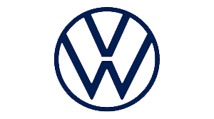
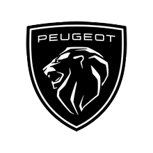
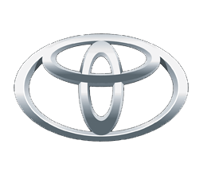
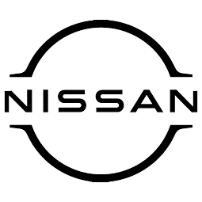

El automóvil (también conocido como auto, coche o carro en algunos países hispanoamericanos) es un vehículo motorizado con ruedas utilizado para el transporte. Está compuesto por diversas partes, como motor, chasis, tipo de carrocería y sistemas de dirección, frenos y suspensión.
En la actualidad, todavía la mayoría de los automóviles están equipados con un motor de combustión interna, aunque cada vez ganan más mercado los híbridos y eléctricos, como intento de mitigación ante la producción de gases de efecto invernadero.
La historia de la automoción, en sentido estricto, comienza en el siglo XVII. La palabra deriva del griego αὐτός autós, «a sí mismo», y del latín mobilis, «que se mueve», sobre todo para distinguir entre los vehículos a motor y los de tracción animal. De estos vehículos autopropulsados se conocieron muchos tipos diferentes a través de las épocas.
Volkswagen es un fabricante de automóviles con sede en Wolfsburgo, Baja Sajonia, Alemania. Volkswagen tiene tres modelos en la lista de 10 coches más vendidos de todos los tiempos: Golf, Escarabajo y Passat. Con estos tres coches, el fabricante tiene más en la lista que aquellos de cualquier otro fabricante que continúan produciendo, según Wall Street.
Ford Motor Company (más conocida simplemente como Ford) es una empresa multinacional fabricante de automóviles de origen estadounidense. Con su sede central ubicada en Dearborn (Michigan), Estados Unidos, se ha expandido a nivel mundial destacándose principalmente por la producción de automóviles, vehículos comerciales y automóviles de carreras. La compañía tiene presencia a nivel mundial, gracias a sus subsidiarias ubicadas en Alemania, Argentina, Canadá, Chile, España, India, México, Reino Unido y Tailandia, entre otros.
Ford es el segundo mayor fabricante de automóviles con sede en Estados Unidos (precedido por General Motors) y el quinto más grande en el mundo (por detrás de Toyota, Volkswagen, Hyundai Motor Group y General Motors) basado en la producción de vehículos de 2015. A finales de 2010, Ford fue el quinto mayor fabricante de automóviles en Europa. Durante el año 2021, y por séptimo año consecutivo, Ford fue la marca más vendida en Europa en el segmento de vehículos comerciales (furgonetas, furgones y sus derivados).
Peugeot es un fabricante de automóviles con sede en Poissy, Francia, especializado en la fabricación de turismos, vehículos comerciales, automóviles de carreras, servicios de movilidad como alquiler de vehículos, bicicletas, motonetas.
La marca Peugeot se remonta a inicios del siglo XIX cuando Jean-Jacques Peugeot se instala cerca de Doubs donde comienza a fabricar molinillos de café. Este primer medio de producción trae como consecuencia después de su fallecimiento la edificación de un emplazamiento para la construcción de molinillos en Sous-Cratet. Sus dos hijos, Jean-Pierre Peugeot y Jean-Georges Peugeot, crearían luego un imperio productivo. Fue fundada el 26 de septiembre de 1810.
Toyota Motor Corporation es un fabricante de automóviles japonés fundado en 1933 por Kiichiro Toyoda. Su sede principal está ubicada en Toyota (Aichi) y Bunkyo(Tokio), aunque por su carácter multinacional, también cuenta con otras subsidiarias y fábricas en varios países.
La empresa tiene un marcado carácter de innovación en el sector automotor: comercializó el primer sistema de estacionamiento automático, la primera transmisión automática de 8 y 10 velocidades, el sistema de guía de información de tráfico en tiempo real con reasignación de ruta dinámica o el control de climatización de cuatro zonas con tecnología de infrarrojos. Es especialmente notoria por ser pionera en la producción y comercialización masiva de automóviles basados en la tecnología de combustible híbrida como el modelo Prius o la división de automóviles de lujo Lexus. Pero también apuesta por vehículos propulsados con pila de combustible, como el Toyota Mirai o el autobús Toyota Sora, que no generan emisiones de CO2 al emplear el hidrógeno como combustible.
Nissan Motor es un fabricante japonés de automóviles, con base en Nishi-ku (Yokohama). Su nombre común, Nissan, es un acrónimo de "Nippon Sangyo". Está entre las principales compañías automotrices en términos de producción anual de vehículos. Desde 1999 forma parte de una triple alianza Renault-Nissan-Mitsubishi, donde la firma francesa llegó a reducir su participación en Nissan pasando del 43% al 15%, por lo que el 28% restante serían transferidos a un fideicomiso francés.
Nissan se remonta a Kawaishinsha Co., una fábrica de automóviles fundada por Masujiro Hashimoto en el distrito de Azabu-Hiroo, Tokio en 1911. Hashimoto era un pionero en la industria del automóvil de Japón desde sus comienzos. En 1914, un pequeño coche de pasajeros fue desarrollado basándose en su propio diseño, y en el año siguiente el coche hizo su debut en el mercado bajo el nombre de Dat, que representa las primeras letras de los apellidos de los tres soportes principales de Hashimoto: Kenjiro Den, Rokuro Aoyama y Meitaro Takeuchi.
